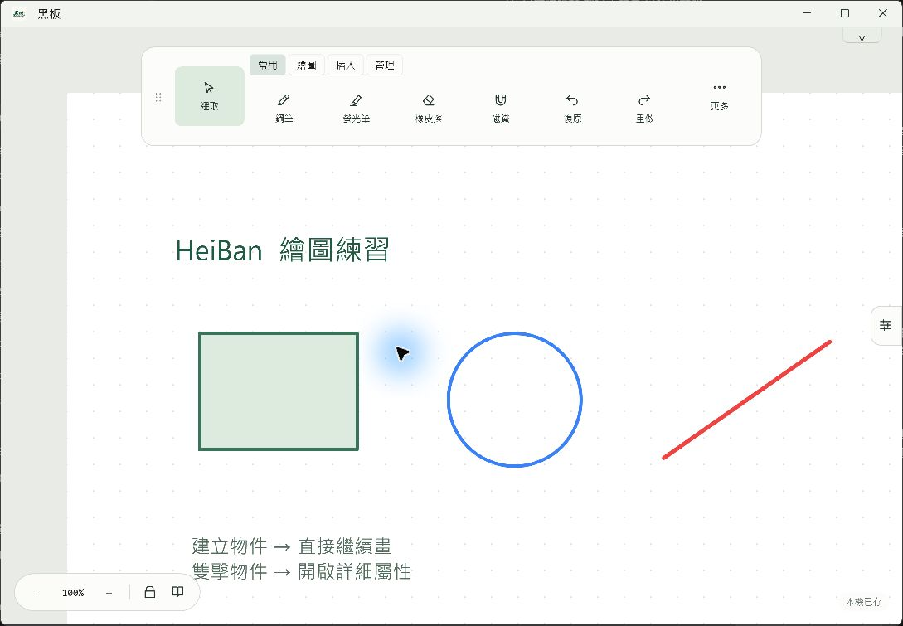
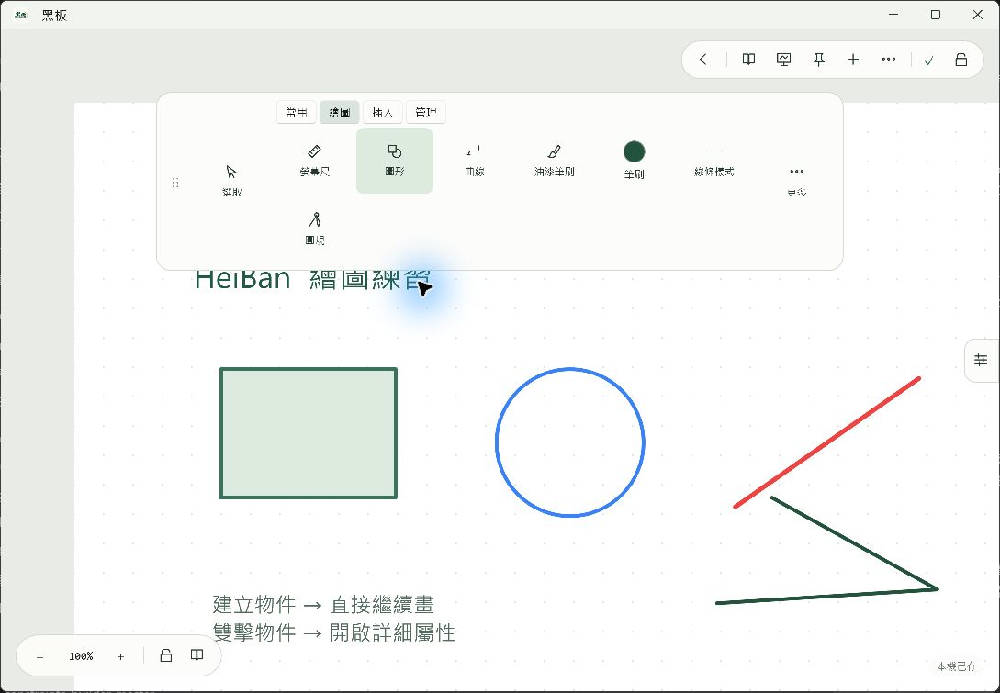
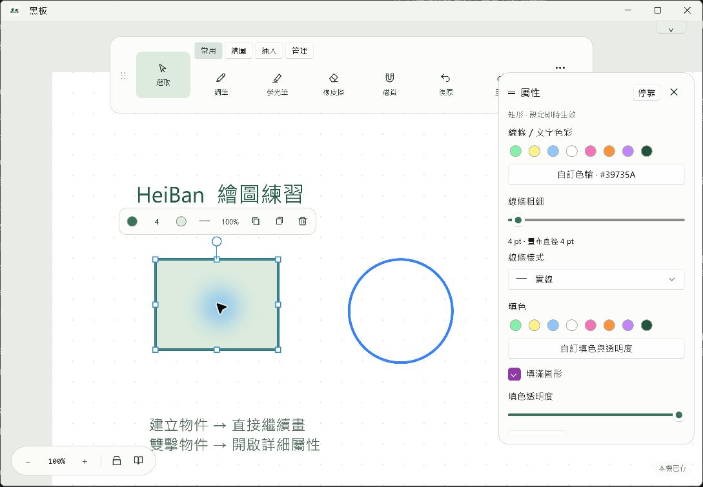
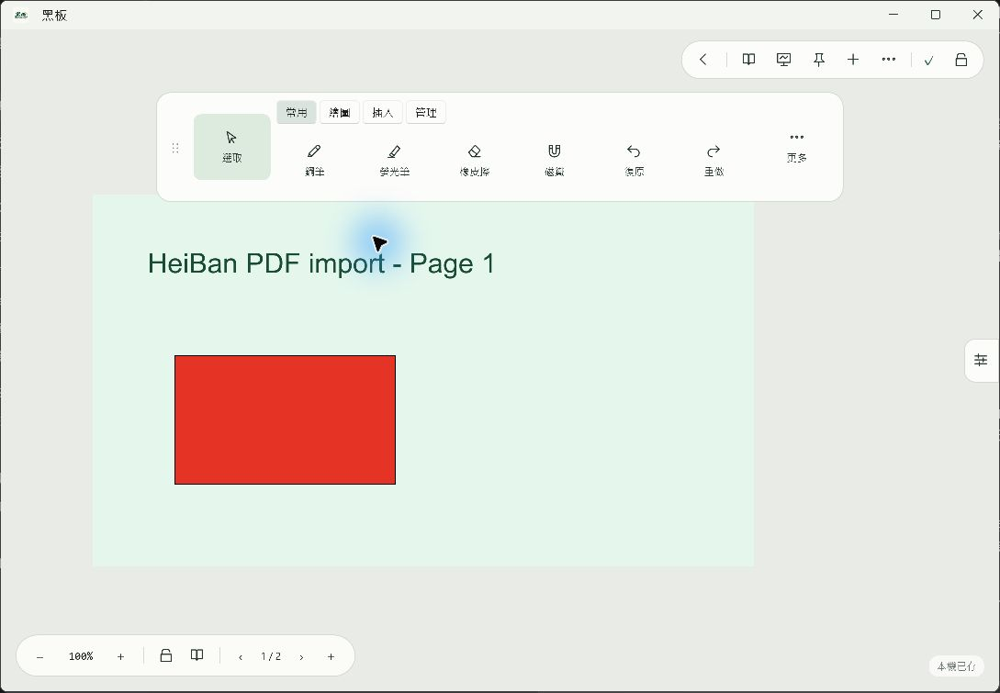

Nenhuma seção encontrada. Tente outra palavra.
01Idioma da interface e do guia
Na parte inferior da barra lateral inicial, escolha Idioma (ícone 文/A quando recolhida). São dez: chinês tradicional (padrão), simplificado, inglês, japonês, coreano, espanhol, francês, alemão, português do Brasil e árabe. A escolha salva vale imediatamente e na próxima abertura. Nomes/textos existentes não são traduzidos; novos nomes padrão usam o idioma atual.
A ajuda abre no idioma da interface. O seletor desta página muda somente o guia, não a preferência do aplicativo. Páginas, navegação e pesquisa funcionam offline. Árabe se lê da direita para a esquerda sem espelhar o canvas. Diálogos do sistema/erros originais podem usar outro idioma; alguns controles internos precisam de reinício.
02Primeiros passos
Na página inicial, pressione + para criar caderno, canvas infinito ou quadro limitado. Informe nome, cor e padrão de fundo. Desenhe com Caneta e mova/ajuste objetos com Seleção (V).
Salvamento automático está DESATIVADO por padrão. Ctrl+S salva manualmente; sair do trabalho ou fechar normalmente também salva. Exporte .heiban para um backup editável. O guia não cria exemplos na biblioteca.
03Início e biblioteca
Um clique destaca o cartão sem ações em lote. Clique duas vezes ou use botão direito → Abrir trabalho. O menu também permite favoritos, renomear, duplicar e lixeira. A lixeira mantém o original; clique duas vezes para restaurar.
O círculo tracejado ao lado de Importar ativa seleção múltipla; um círculo marcado indica escolhido. Selecione resultados ou cartões individuais, envie à lixeira e use Concluído para sair. Pesquise nome, filtre formato, ordene por alteração/criação/nome e escolha miniaturas160/190/250 pt. Importe .heiban/.blackboard.json; a lateral mostra todos, favoritos ou lixeira.
04Tipos de canvas e páginas
O caderno tem páginas independentes. Número e setas inferiores navegam; + adiciona. O menu permite pular, renomear, duplicar, reordenar e excluir. Canvas infinito segue em qualquer direção; o quadro limitado tem bordas fixas para apresentação/layout.
O infinito não tem seletor de tamanho. Quadros novos começam16:9 (1920×1080), com A4 retrato/paisagem e1:1 disponíveis. O diálogo lembra tamanho por tipo. Criação e Fundo oferecem liso, linhas, pontos, grade, pauta musical e cor. Aplicar muda o existente; Cancelar mantém; uma ação de desfazer restaura.
06Navegação e barras
No topo: Início, leitura/edição, alfinetes, +, Mais, estado de salvamento e fixação. Sem fixação recolhe ao sair o ponteiro. Marca significa salvo; círculo tracejado significa pendente, salvando ou incompleto.
Arraste a alça aos quatro lados: horizontal em cima/baixo, vertical nas laterais. Mais → Personalizar barra mostra, esconde e ordena; ferramentas escondidas ficam em Mais ferramentas. Camadas de objetos abre painel separado. A barra de tela se adapta sem rolagem.
Em Configurações ou Mais → Personalizar barra, escolha ícones ou abas com texto: Frequentes, Desenho, Inserir e Organizar. Seleção (V) fica sempre visível. As ferramentas ocupam uma linha ou coluna; as setas trocam de grupo quando falta espaço. Marque à esquerda para mostrar e Frequentes para incluir na aba. Selecionar tudo, Padrões e ordenação continuam disponíveis. Painéis e diálogos usam o branco de papel e verde HeiBan, sem seguir o tema claro/escuro do Windows. Os seletores de arquivos do sistema são controlados pelo Windows.


07Caneta e pincéis
Caneta e círculo de cor ajustam cor, espessura, opacidade e tipo: vetorial, tinteiro, lápis, aquarela, marca-texto, giz de cera, caligrafia, pintura. Preferências são lembradas. Traços são vetores suavizados, não simulação física de materiais, e podem ser movidos/recoloridos.
Com caneta vetorial, desenhe quase reto e mantenha pressionado parado um segundo para alinhar. Mover mais de12 pt recupera a prévia original; soltar confirma uma ação desfazível. Fita de ocultação em Mais esconde perguntas; clique duplo/configurações revela ou esconde, com desfazer.
08Linhas, setas, formas e curvas
Crie linha/seta arrastando ou clicando A depois B. Mova corpo/extremos separadamente. Propriedades oferece segmento, extensão A/B ou ambos mantendo pontos originais. Comprimento/largura da ponta são independentes; espessura também muda seu contorno.
Retângulo, círculo, losango, pentágono, estrela por arrasto; triângulo/quadrilátero ponto a ponto. Curva tem três pontos: prévia, curvatura, confirmação. Seleção edita vértices/controles; Esc cancela geometria pendente. Cor/Propriedades muda contorno, preenchimento, gradiente, opacidade aplicáveis.
A ferramenta permanece ativa após desenhar. Triângulos e quadriláteros mostram segmentos retos; apenas Curva mostra uma curva. Círculos, losangos, pentágonos e estrelas começam pelo centro; retângulos por um canto. O ímã funciona desde o primeiro ponto e mostra um anel verde em cerca de 10 DIP da tela. O retângulo tem nove referências: quatro cantos, quatro pontos médios e centro; o triângulo tem três vértices e três pontos médios. Outros polígonos incluem os pontos médios, e linhas/setas as extremidades e o meio. Círculos e arcos do compasso oferecem centro e quatro pontos cardeais; arcos também suas extremidades. Objetos ocultos são excluídos; formas bloqueadas servem de referência e não se movem.


09Seleção e transformações
V seleciona; Ctrl+clique alterna e laço escolhe regiões. Quadro esquerda→direita (azul contínuo) exige inclusão total; direita→esquerda (verde tracejado) pega o tocado. Ctrl/Shift+arrasto adiciona. Mova, copie, cole, estilize ou exclua conjuntos.
Forma única tem oito alças de tamanho e uma de giro com cursores correspondentes. Linhas/setas A/B, arcos início/fim. Cantos de imagem preservam proporção; Shift libera. Shift no giro ajusta15°. Bloqueados não movem/excluem em lote; ocultos ficam em Camadas.
Criar ou clicar uma vez mostra apenas controles de tamanho, rotação ou extremidades. Dois cliques abrem as propriedades detalhadas e iniciam a edição de texto. Use V para manipular e outra ferramenta para continuar desenhando. Não há retorno a V após cada objeto.


10Propriedades, cores e estilos
Somente ajustes pertinentes ao objeto aparecem: cor/espessura, preenchimento/gradiente/opacidade possíveis, texto/geometria. Contínuo, tracejado, pontilhado, traço-ponto têm amostras e a barra mostra o atual. Defina antes de desenhar; alteração da seleção também orienta próximos desenhos.
Encaixe pelo controle ou arraste o título: vertical nos lados, horizontal em cima/baixo. Camadas, borracha, régua têm entradas próprias sem misturar propriedades. Extensão e ponta ficam nas propriedades de linha/seta.
11Texto e notas adesivas
Escolha Texto(T)/Nota e clique. Enter quebra linha, Ctrl+Enter ou sair do editor confirma, Esc cancela. Composição não dispara atalhos. Círculo oferece fonte, negrito, itálico, sublinhado, tachado, alinhamento. Notas: canto dobrado, fita, gato, caderno, grade, suave.
Editar formatação parcial permite selecionar texto, formatar/cor/destaque e salvar numa ação desfazível. Botão direito de texto/rascunho ajusta caixa inteira. Mais ajustes aplica só campos alterados a texto/notas desbloqueados da página, ignorando outros. Tela aceita8–144 pt, #RRGGBB, fonte, alinhamento, opacidade.
12Borracha
Escolha e clique novamente para apagar objeto/parte de traço e ajustar diâmetro. Círculo translúcido indica alcance nos dois canvas.
Modo objeto remove traço/forma inteira tocada; parcial remove só trecho atravessado. Texto, notas, imagens são protegidos: selecione e Delete para excluir.
Na tela normal há um apagador magnético original branco-papel e verde-sálvia visto de cima no canto inferior direito. Arraste para apagar conforme a base arredondada e inclinada; ao soltar ele volta ao lugar e confirma uma ação que pode ser desfeita. Esc ou perda da captura cancela toda a passada. Clique direito escolhe objeto ou traço parcial, ou oculta; Configurações → Mostrar apagador o restaura. O tamanho na tela é convertido conforme o zoom. O modo parcial/pixel corta apenas traços, sem alterar pixels de imagens ou elementos originais de PDF/apresentação. A tela de anotações do desktop mantém a borracha circular. Mais → Mostrar apagador na barra alterna a visibilidade e salva a escolha. Ele se inclina do alto à esquerda para baixo à direita; a área de pegar e apagar segue o mesmo contorno espelhado.
13Régua
Arraste corpo para mover e alças para girar. Pivô dourado vai a qualquer borda de desenho ou extremo; giro fica ao redor dele. Botão direito/configurações: borda, posição0–100%, ângulo0.1°, opacidade, comprimento.
Comprimento20–150% da largura, inicialmente90%, adaptável à janela. Traço iniciado perto da borda se alinha ao eixo durante todo o gesto, mesmo além da régua.
14Compasso: preparar, travar, desenhar
Mova centro, raio e ponta para posição/raio/ângulo, sem criar objeto. Clique centro: laranja vivo, centro/raio travados.
Arraste ponta pela circunferência para prévia de arco orientado, contínuo ao cruzar0°. Solte para criar arco editável e ação desfazível. Clique parado não cria. Arco tem escala proporcional, giro e alças de ângulos inicial/final.
15Ponteiro laser
Escolha na barra/Mais e clique laser ativo novamente para ponto, rastro curto, linha, cor, diâmetro, espessura, duração e núcleo branco. Disponível também na tela.
Laser é temporário; não cria objetos salvos nem ações de desfazer.
16Calculadora e cronômetro
Abra em +, arraste título/recolha. Calculadora aceita parênteses, funções científicas, π, e, Ans, teclado/Enter. Só Inserir expressão cria texto.
Temporizador tem cronômetro,5/15/25 minutos e segundos personalizados. Fechar painel mantém contagem e aviso; reabrir conserva estado.
17Imagens, capturas e recorte
Captura em +/barra e arraste área. Esc/botão direito, mudança trabalho/página, tempo esgotado cancela. Resultado proporcional no centro da vista, sem pasta extra. Win+Shift+S pode ser colado com Ctrl+V.
Arraste PNG/JPG/BMP do Explorador; mova, dimensione, gire. Recortar imagem / Restaurar original no menu de cor usa retângulo em pixels originais e conserva fonte. Captura interna usa resultado próprio, não imagens alheias da área de transferência.
18Alfinetes de vista e cores
Alfinete superior guarda centro/zoom; escolha entrada para voltar. Clique duplo em alfinete/nome renomeia, Enter/clicar fora salva, Esc cancela. Botão direito do nome também funciona, com desfazer.
Cores do alfinete e texto pelo botão direito ou Cores da lista muda cada uma. Windows guarda campos opcionais; Mac antigo pode removê-los ao salvar novamente.
O diálogo de alfinetes começa com Adicionar e foca o novo nome; busca e lista vêm abaixo. A lista usa o mesmo desenho e as cores de corpo e texto de cada alfinete na tela.
19Canvas da tela
Abra por início, ícone, Mais ou Ctrl+Alt+A. Salva trabalho, esconde janela principal; desktop segue ativo sob anotação transparente independente. Encaixe aos quatro lados; linhas/colunas sem rolagem mantêm limpar/fechar. Há cor, camadas e paleta; configure o preenchimento no menu Formas. Borracha/Laser novamente abre ajustes. As ferramentas compartilhadas compatíveis seguem a visibilidade e a ordem da barra principal; pinos e bloqueio de visão ficam de fora. Formas oferece as mesmas nove opções. Com a Caneta, um traço quase reto vira linha após um segundo parado; mover mais de 12 pt restaura a prévia à mão livre.
Desenhar/Operar ou Ctrl+Alt+D alterna anotação/app abaixo. Botão direito muda estilo, copia, duplica, exclui, bloqueia, ordena e preserva grupo selecionado. No vazio cancela apenas gesto pendente. Shift+clique/quadro adiciona com regra inclusão/toque. O laço seleciona os objetos tocados. Seleção move, escala, gira, ajusta extremos; Shift restringe linha/seta horizontal/vertical.
T e clique escreve; Enter quebra, Ctrl+Enter/Concluído confirma, Esc cancela. Clique duplo ou Mais → Objetos selecionados → Editar texto reabre. Mudanças ferramenta/modo, captura, exportação ou fim confirmam rascunhos. Só valores alterados em desbloqueados; sliders contínuos desfazem juntos.
Captura/Ctrl+Alt+S vira imagem na posição original sem pasta extra. Mais → Exportar anotações salva PNG transparente/.heiban; Salvar anotações é manual. ×/Ctrl+Alt+Q salva sessão e restaura principal, continuando depois. Lixeira/Ctrl+Alt+K limpa tudo sem perguntar; Desfazer recupera. Com atalhos ocupados use barra. Anotações não se unem automaticamente ao trabalho.
20Salvar, dados e exportar
Configurações em início/Mais controla automático, padrão desligado e escolha lembrada. Ligado: normal aproximadamente15 segundos, tela um segundo após mudanças pararem; gesto pendente adia. Desligado para salvamento periódico. Ctrl+S ou Mais → Salvar anotações é manual.
Voltar, mudar trabalho/tela, sair normalmente espera salvar com indicador girando. Falha mantém janela/conteúdo. Sem automático, travamento, falta de energia, encerramento forçado pode perder alterações.
Escolha página, seleção ou vista para .heiban/JSON/PNG/SVG/PDF/HTML. Original/JSON mantém todas as páginas. PNG usa renderizador; SVG conserva vetores/imagens e foreignObject (visualizador compatível). PDF requer Edge WebView2 e inclui dados editáveis; HTML offline com JSON.
Instalado: %LOCALAPPDATA%\HeiBan\Windows\; portable: Data/ junto; Store: dados da app. Feche normalmente e copie pasta inteira com trabalhos/lixeira/configurações antes de migrar. Mantenha portable completo, sem executar dentro do ZIP.
Início → Importar aceita PDF, PPTX e PPT. Cada página vira uma imagem de fundo bloqueada em uma página separada para anotações. Escolha até 200 páginas e 100 MB de imagens por importação. Cancelar não cria um trabalho parcial. Texto e formas originais não se tornam elementos editáveis.
PPT/PPTX exige o PowerPoint para desktop; sem ele, converta primeiro para PDF. Fontes ausentes podem alterar o layout. Animações, vídeos, transições e interações não são mantidos; arquivos criptografados ou danificados podem falhar. Para exportar o caderno inteiro, escolha página atual/todo o conteúdo e ative Exportar todas as páginas para PDF. Seleção e visualização atual mantêm seu próprio alcance.


21Atalhos
Ctrl+S salvar; Ctrl+N novo; Ctrl+Z/Ctrl+Y desfazer/refazer; Ctrl+C/Ctrl+V copiar/colar objetos ou imagens; Delete excluir; Esc cancelar gesto/captura/forma.
Espaço+arrastar ou central move; roda/Ctrl+roda zoom; V/P/E/T seleção/caneta/borracha/texto; Win+Shift+S depois Ctrl+V captura/cola. Tela com Ctrl+Alt: Ainicia, Ddesenha/opera, Scaptura, Klimpa, Qtermina. Com conflito use barra.
22Atualizações
GitHub: Início → Sobre → Configurações de atualização ou Mais → Verificar e configurar. Verifica cerca de10 segundos após início e seis horas enquanto aberto. Desative automático/prévias ou verifique manualmente. É separado de salvar.
Confere arquitetura/tipo, tamanho/SHA-256. Após salvar e fechar todas as janelas da instalação, atualizador separado aplica para próximo início, sem forçar fechar/reabrir. Offline, interrupções, arquivos ocupados mantêm versão para tentar depois. Desligar impede também aplicar pacote preparado.
Portable mantém Data, portable.dat, desconhecidos; instalado conserva localização e backups. Preparação/resultados: %LOCALAPPDATA%\HeiBan\Updates\, sem enviar trabalhos. Não remova unidade/energia durante instalação. Store atualiza pelo Store, não GitHub. Hash não é assinatura Authenticode; Windows pode avisar na primeira instalação. Versões antigas precisam de uma atualização manual para obter atualizador.
23Escopo e limitações
Candidato de desenvolvimento Windows1.0.14 aguardando validação da série inteira e decisão do usuário sobre versão formal. Compilar/empacotar não verifica mouse/caneta, várias telas/DPI, idiomas ou instalação Store. Consulte resultados no registro.
Nuvem/Google, colaboração, mapas mentais próprios, tabelas, fórmulas, molduras, editar PDF/SVG externos como originais não estão entregues. Campos JSON desconhecidos são mantidos. Texto do trabalho mantém idioma; interface não o traduz.
24Dicas de fundo
Escolha tipo primeiro, depois tamanho e fundo. Infinito sem dimensão, limitado começa16:9 e pode mudar. Liso, linhas, pontos, grade, pauta na criação ou Fundo depois.
Aplicar confirma, Cancelar mantém, Desfazer recupera. Só muda papel, não cores existentes de traços/texto.
25Ordem de camadas e indicadores
Abra Camadas na barra/Mais. Linhas superiores estão à frente. Arraste barra dupla cinza à esquerda do ícone para metade superior/inferior de outra linha, inserindo acima/abaixo. Original esmaece, nome/ícone seguem ponteiro, linha verde indica destino. Renomear mantém identidade; nome vazio retorna automático.
Ocultos ficam disponíveis, bloqueio impede lote. Propriedades e Camadas são separados. Cursores, estado de salvamento, círculos marcados e alcance da borracha explicam ações. Relate anomalias desta prova antes de aprovar atualização formal.